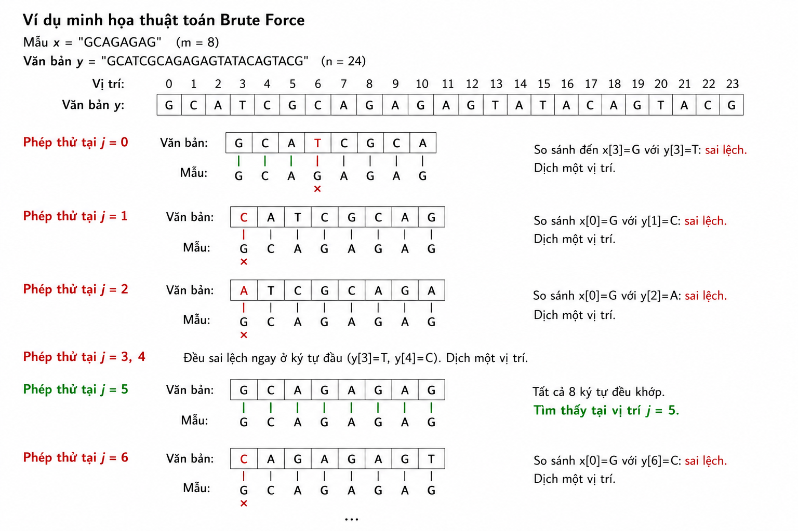

Thuật toán vét cạn là cách trực tiếp và tự nhiên nhất để giải bài toán so khớp chuỗi. Ý tưởng đơn giản: thử đặt mẫu tại mọi vị trí có thể trong văn bản, và tại mỗi vị trí, kiểm tra xem mẫu có khớp hoàn toàn với đoạn văn bản tương ứng hay không.
Không có bước tiền xử lý, không có cấu trúc dữ liệu phụ. Toàn bộ công việc nằm ở việc so sánh trực tiếp từng ký tự. Vì thế thuật toán rất dễ hiểu, dễ cài đặt, và luôn cho kết quả đúng, nhưng đổi lại hiệu năng không tối ưu vì nó không tận dụng thông tin đã thu được từ các phép so sánh trước đó.
Ta có một cửa sổ độ dài m đặt tại vị trí j của văn bản, ban đầu $j = 0$. Tại mỗi vị trí:
x[0] với y[j], x[1] với y[j+1], ...m ký tự đều khớp, ta ghi nhận một xuất hiện tại vị trí j.Quá trình dừng khi $j > n - m$, tức là cửa sổ đã trượt hết văn bản.
Điểm yếu của thuật toán là ở chỗ: sau một điểm sai lệch, nó "quên" hết mọi ký tự vừa so sánh và bắt đầu lại từ đầu ở vị trí kế tiếp. Điều này dẫn đến việc so sánh lặp lại nhiều lần trên cùng những ký tự văn bản. Trong trường hợp xấu nhất — chẳng hạn mẫu x = "aaab" trên văn bản gồm toàn ký tự a — mỗi phép thử phải so sánh gần m ký tự trước khi thất bại, dẫn đến độ phức tạp $O(mn)$.
Tuy vậy, trên dữ liệu thực tế với bảng chữ cái lớn, các điểm sai lệch thường xảy ra rất sớm, nên trên thực tế thuật toán vét cạn chạy khá nhanh, gần với $O(n)$.
#include <stdio.h>
void search(char *x, int m, char *y, int n) {
int i, j;
/* Thử đặt mẫu tại mọi vị trí j từ 0 đến n - m */
for (j = 0; j <= n - m; j++) {
/* So sánh mẫu với cửa sổ y[j .. j+m-1] từ trái sang phải */
for (i = 0; i < m && x[i] == y[i + j]; i++)
;
/* Nếu i chạy hết mẫu, ta có một xuất hiện */
if (i == m)
printf("Tim thay tai vi tri %d\n", j);
}
}Vòng lặp ngoài duyệt mọi vị trí đặt cửa sổ; vòng lặp trong so sánh ký tự cho tới khi hết mẫu hoặc gặp sai lệch. Nếu i đạt tới m, mọi ký tự đã khớp và ta in ra vị trí.
Xét mẫu x = "GCAGAGAG" (độ dài $m = 8$) trên văn bản y = "GCATCGCAGAGAGTATACAGTACG" (độ dài $n = 24$).

Phép thử tại $j = 0$: cửa sổ canh với GCATCGCA.
Vị trí: 0 1 2 3 4 5 6 7
Văn bản: G C A T C G C A
Mẫu: G C A G ...So sánh $x[0]=G$ với $y[0]=G$ khớp; $x[1]=C$ với $y[1]=C$ khớp; $x[2]=A$ với $y[2]=A$ khớp; $x[3]=G$ với $y[3]=T$ sai lệch. Dừng, dịch một vị trí.
Phép thử tại $j = 1$: $x[0]=G$ với $y[1]=C$ sai lệch ngay lập tức. Dịch một vị trí.
Phép thử tại $j = 2$: $x[0]=G$ với $y[2]=A$ sai lệch ngay. Dịch một vị trí.
Các phép thử tại $j = 3, 4$ cũng thất bại ngay ở ký tự đầu ($y[3]=T$, $y[4]=C$).
Phép thử tại $j = 5$: $x[0]=G$ với $y[5]=G$ khớp, $x[1]=C$ với $y[6]=C$ khớp, $x[2]=A$ với $y[7]=A$ khớp, $x[3]=G$ với $y[8]=G$ khớp... tiếp tục cho tới y[5..12] = "GCAGAGAG" khớp toàn bộ. Tìm thấy xuất hiện tại vị trí 5.
Quá trình tiếp tục dịch cửa sổ cho tới cuối văn bản; không có xuất hiện nào khác.